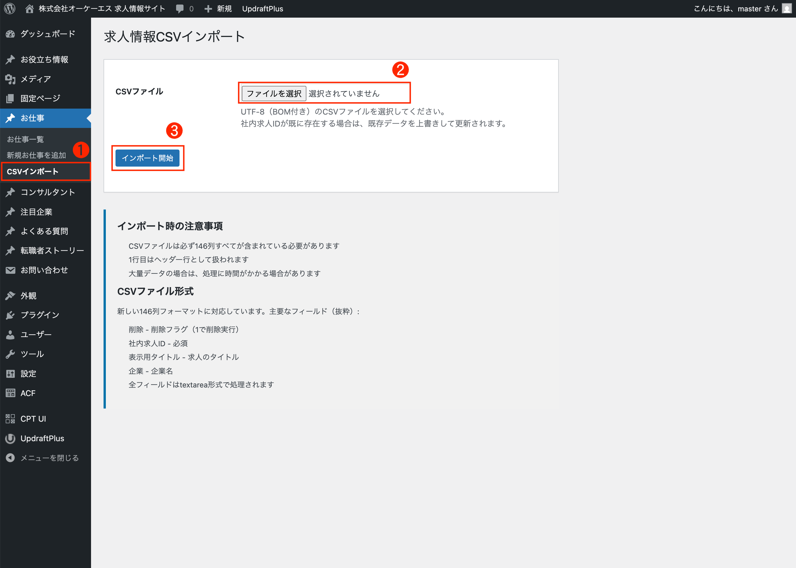

お仕事情報登録
1 サイドナビ「お仕事」→「CSVインポート」をクリック
❶：求人情報CSVインポート
左側のメニューから「お仕事 -> CSVインポート」をクリックします。
❷：CSVファイルの選択
「ファイルを選択」をクリックしてCSVファイルをアップロードしてください。
❸：インポート開始
「インポート開始」をクリックすると一括登録が開始されます。
インポート完了
「インポートが完了しました。」と表示され、お仕事一覧にインポートされた投稿が表示されます。
エラー対応
インポートエラーが発生した場合、上記の赤枠の箇所にエラー内容が表示されます。
それぞれのエラー対応は以下になります。
1 CSVファイルに必要な列が不足しています: [列名]
原因
・CSVファイルに必須の列が含まれていません。項目確認用.csv
対応方法
・CSVの1行目（ヘッダー行）に不足している列名を正確に追加してください。
・列名は大文字・小文字、全角・半角、スペースなども完全一致する必要があります。
例）全角 -> 半角：H＿応募資格 -> H_応募資格, H＿給与詳細 -> H_給与詳細
2 CSVファイルに不要な列が含まれています: [列名]
原因
・システムが想定していない列がCSVファイルに含まれています。
3 CSVファイルのヘッダー検証に失敗しました。必要な列数: 146、実際の列数: [数値]
原因
・CSVファイルの列数が146列と一致していません。
対応方法
・CSVファイルの列数を確認してください（必須: 146列）。
・列が多い場合: 不要な列を削除してください。
・列が少ない場合: 不足している列を追加してください。
・Excel等で編集している場合、列の結合や削除がないか確認してください。
4 ヘッダーの位置 [数値] が一致しません。必要: '[列名]'、実際: '[列名]'
原因
・列の順序が正しくないか、列名が完全一致していません。
対応方法
・列の順序を正しい順番に並べ替えてください。
・列名の表記を完全一致させてください（スペース、全角/半角、記号なども含む）。
・テンプレートCSVファイル（項目確認用.csv）から列の順序をコピーすることを推奨します。
5 CSVファイルが見つからないか、読み取りできません
原因
・ファイルが存在しないか、アクセス権限がありません。
対応方法
・ファイルパスを確認してください。
・ファイルが存在し、読み取り可能か確認してください。
・もう一度ファイルを選択し直してください。
6 CSVファイルを開けませんでした
原因
・ファイルが破損しているか、形式が正しくありません。
対応方法
・ファイルが破損していないか確認してください。項目確認用.csv
・CSV形式（UTF-8 BOM付き）で保存されているか確認してください。
・Excelで開いて「名前を付けて保存」→「CSV UTF-8（コンマ区切り）」で再保存してください。
7 CSVファイルのヘッダー行を読み取れませんでした
原因
・ファイルの1行目（ヘッダー行）が破損しているか、形式が正しくありません。
対応方法
・1行目にヘッダー（列名）が正しく入力されているか確認してください。
・CSV形式（UTF-8 BOM付き）で保存されているか確認してください。
・テンプレートCSVファイル（項目確認用.csv）のヘッダー行をコピーしてください。
8 CSVファイルに有効なデータ行が見つかりませんでした
原因
・ヘッダー行以外にデータが入力されていません。
対応方法
・2行目以降にデータが入力されているか確認してください。
・空行だけでなく、実際のデータが含まれているか確認してください。
・各行の列数が146列と一致しているか確認してください。